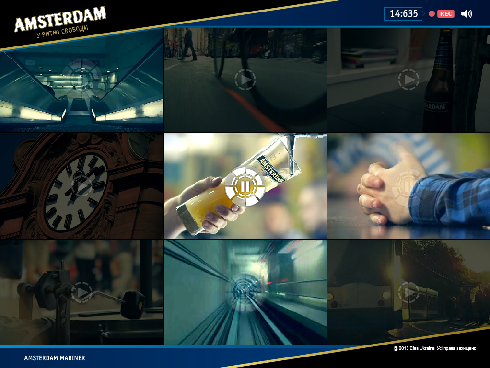
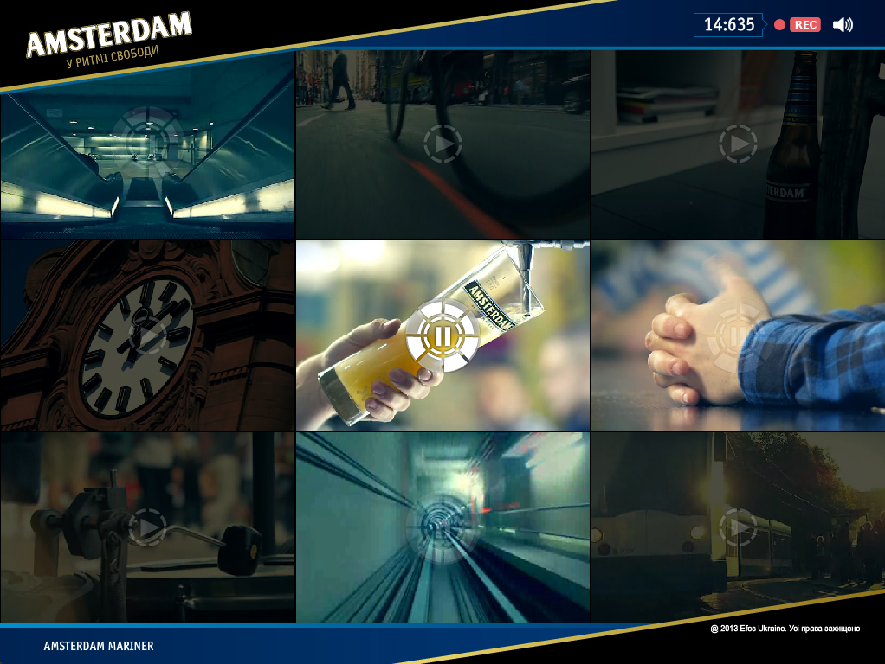

amsterdamusic
Client: SAB Miller Ukraine, Agency: Peppermint interactive
http://amsterdamusic.com.ua/


 


Task
Create a promotional website for the beer brand Amsterdam mariner, which evolve youth culture of indie music and interests of consumers. Therefore, it was decided to create a video mixer using which you can record your trip to Amsterdam. In a finale of this journey, you have the personal video clip to share with your friends and get a chance to win a prize.
Solution
The key moments of this project were the quality of sound and preciseness of animation. The flash technology was viewed as the most appropriate for this task. There were no plans to produce a mobile version because it was unlikely to achieve appropriate visual and audio quality using the mobile Internet connection and small screens.
The most difficult part of the project was synchronization of sound and it gapless connection while still have a possibility to load and insert additional sounds. As I discovered most sound editors add a few milliseconds of silence at the beginning and the end of a track while encoding to MP3. So I was forced to seek an alternative solution of encoding.
The project is made using Flash technology